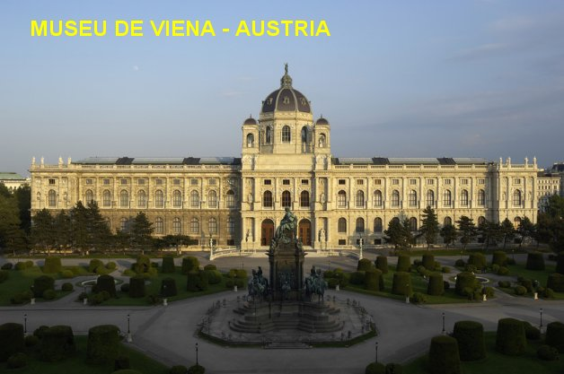
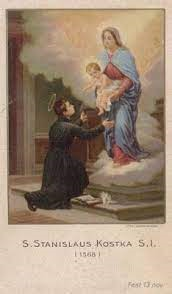
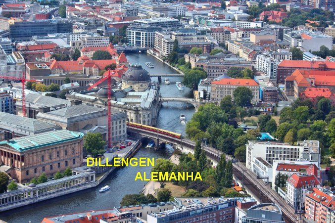
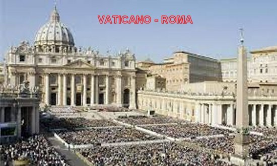
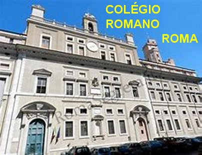
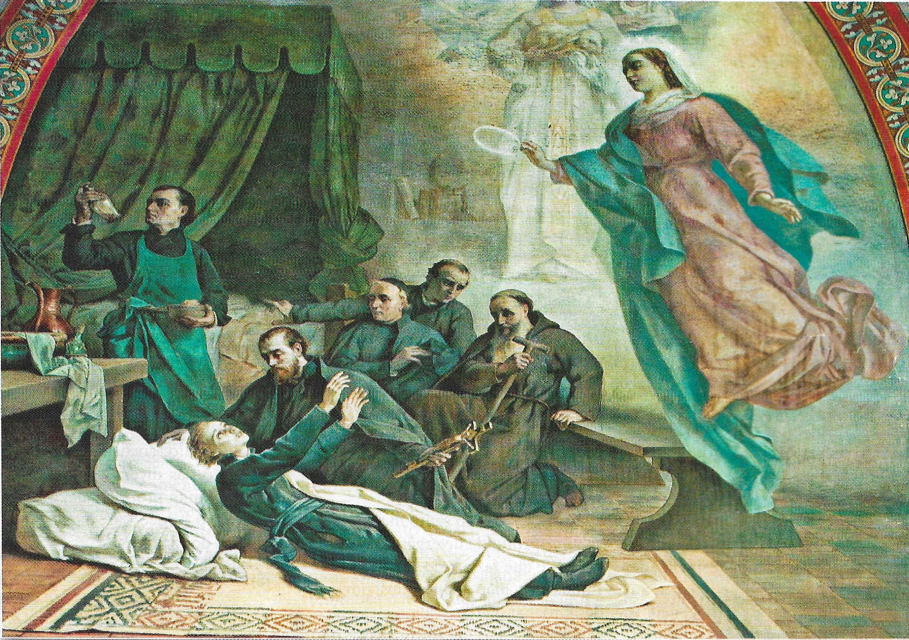
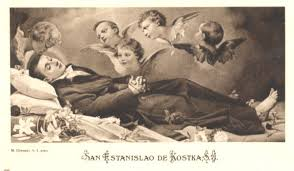

“FUGA EM BUSCA DO AMOR”
OPÇÃO PELA VIDA
CONSAGRADA

Estanislau já estava perfeitamente decidido
a seguir a vida religiosa, inclusive de se consagrar Sacerdote do DEUS Altíssimo. Entretanto,
nem ele e nem o Paul, não haviam manifestado a sua vontade perante as autoridades Religiosas,
muito embora, pelo fato concreto deles terem escolhido e procurado os Jesuítas, já era uma
indicação bem clara. Por outro lado, passada aquela fase crítica, quando
aconteceu a intervenção do Imperador Austríaco na Administração Particular do
Colégio dos Jesuítas, agora podia se observar que os entendimentos voltaram a
serem cultivados com normalidade, embora em escala modesta, considerando que
ainda existia restrições, e a direção do Colégio não se esquecia da falta de fé
do Imperador Austríaco. Por todos esses motivos, os diálogos existiam, mas eram
cuidadosos. Procurava-se manter uma posição aberta ao entendimento, sem contudo
pretender revelar algum projeto de expansão religiosa. Por essa razão, quando
agora, nessa época, o jovem Estanislau manifestou claramente o desejoso de se
consagrar sacerdote, os Padres Administradores da Ordem Jesuíta pediram um prazo
para reflexão. Primeiro, por causa dos problemas com a administração do
Imperador da Áustria. Segundo, porque eles queriam saber qual era o pensamento
do pai de Estanislau, que segundo informações, era um Senador do Império
Polonês, um homem muito vigoroso, decidido, autoritário e violento, que colocava
muito das suas esperanças administrativas, no filho Estanislau. Então pensavam
os Jesuítas: “Se aceitarmos
sem restrições o pedido de Estanislau, o que poderá pensar o seu pai, e qual será
a sua reação?” Porque de acordo com as Normas do
Instituto Religioso, a manifestação do pai revelando-se de pleno acordo é “perfeitamente
necessária”.
Por essa razão, embora
desejando que Estanislau fosse um Sacerdote Jesuíta, a Administração Religiosa
queria que tudo acontecesse num regime de perfeita paz, de muita concórdia e
compreensão. Pelo seu lado, Estanislau já tinha se afeiçoado aos diretores e
professores da Ordem Jesuíta, que vislumbrava nele um potencial admirável, pela
competência e permanente busca da instrução religiosa, assim como da fraterna e
alegre disposição de servir e cultivar amizades. Mas existiam as dificuldades...
Nem sempre ele alcançava todos os seus objetivos, e muitas vezes era necessário
recorrer aos Santos protetores suplicando a proteção Divina, a fim de poder
perseverar na prática das virtudes. Seu irmão Paul, sempre movido pelo ódio, o
agredia e xingava, querendo conduzir Estanislau para orgia e o mal caminho. O
Tutor que os acompanhava assim se expressou no Processo de Beatificação do
Estanislau: “Paul jamais
disse uma palavra amável e carinhosa ao seu irmão. Era sempre bruto e grosseiro.
Todavia, era perfeitamente visível para todos o verdadeiro caminho de santidade
que era seguido pelo jovem Estanislau, e nós tínhamos plena consciência de todos os belos e
construtivos atos praticados por ele”.
O CARINHO DE NOSSA
SENHORA
Numa ocasião,
conversando com um Sacerdote da mesma Sociedade Jesuíta residente na cidade de
Roma, colocou em destaque a sua mencionada devoção à MÃE DE DEUS e por SANTA
BÁRBARA, descrevendo ao Sacerdote seu amigo, uma preciosa experiência vivida
pessoalmente. Declarou que em certa época não estava bem de saúde, e desconfiava
que o seu organismo não estivesse em perfeitas condições, pois carregava no
corpo, sinais de problemas que incomodavam o seu viver. Em Viena, procurou uma
Igreja com a intenção de conversar com uma autoridade religiosa suplicando que
lhe concedesse a “Sagrada
Eucaristia”, com o objetivo de reforçar
a sua fé e ganhar mais força espiritual para combater os males da saúde. Mas,
infelizmente, embora encontrasse os sacerdotes, nenhum membro do clero pode
atende-lo por motivos de compromissos programados. Na continuidade, conversando
com os vizinhos de onde morava, ele ficou sabendo que o luterano proprietário daquele
pequeno apartamento, não permitia que nenhum sacerdote entrasse no apartamento
e que levassem a Sagrada Comunhão para alguém no apartamento. Inclusive o luterano
exigia ferozmente o cumprimento da sua ordem. Estanislau regressando ao prédio,
rezou fervorosamente a SANTA BÁRBARA e a querida NOSSA SENHORA, suplicando que
pedissem a JESUS a fim de conseguir um meio para que ele pudesse receber a Sagrada
Comunhão. Em poucos minutos lhe apareceu SANTA BÁRBARA na companhia de dois Anjos
trazendo um Cibório (deposito de Hóstias Consagradas) com duas Hóstias Consagradas.
E assim, após rezarem o PAI NOSSO, um Anjo deu a Sagrada Comunhão Eucarística a
Estanislau e ele ficou muito feliz e exultante de alegria. E também ficou raciocinando
sobre a grandeza da misericórdia Divina:
MÃE DE DEUS e por SANTA
BÁRBARA, descrevendo ao Sacerdote seu amigo, uma preciosa experiência vivida
pessoalmente. Declarou que em certa época não estava bem de saúde, e desconfiava
que o seu organismo não estivesse em perfeitas condições, pois carregava no
corpo, sinais de problemas que incomodavam o seu viver. Em Viena, procurou uma
Igreja com a intenção de conversar com uma autoridade religiosa suplicando que
lhe concedesse a “Sagrada
Eucaristia”, com o objetivo de reforçar
a sua fé e ganhar mais força espiritual para combater os males da saúde. Mas,
infelizmente, embora encontrasse os sacerdotes, nenhum membro do clero pode
atende-lo por motivos de compromissos programados. Na continuidade, conversando
com os vizinhos de onde morava, ele ficou sabendo que o luterano proprietário daquele
pequeno apartamento, não permitia que nenhum sacerdote entrasse no apartamento
e que levassem a Sagrada Comunhão para alguém no apartamento. Inclusive o luterano
exigia ferozmente o cumprimento da sua ordem. Estanislau regressando ao prédio,
rezou fervorosamente a SANTA BÁRBARA e a querida NOSSA SENHORA, suplicando que
pedissem a JESUS a fim de conseguir um meio para que ele pudesse receber a Sagrada
Comunhão. Em poucos minutos lhe apareceu SANTA BÁRBARA na companhia de dois Anjos
trazendo um Cibório (deposito de Hóstias Consagradas) com duas Hóstias Consagradas.
E assim, após rezarem o PAI NOSSO, um Anjo deu a Sagrada Comunhão Eucarística a
Estanislau e ele ficou muito feliz e exultante de alegria. E também ficou raciocinando
sobre a grandeza da misericórdia Divina:
“DEUS NOSSO
SENHOR neutralizou a maldade dos homens que me haviam negado o que há de mais
sagrado! E misericordiosamente o SENHOR providenciou mostrando ao contrário, que a
Providência Divina não o deixou desamparado sem o necessário auxílio
espiritual”.
Seu tutor, John
Bilinski que estava presente, testemunhou o milagre, e viu o exato momento em
que ele recebeu a Sagrada Comunhão, muito embora não conseguiu ver SANTA BÁRBARA
e nem os dois ANJOS. Mesmo assim Bilinski confirmou o fato, porque confiava em
Estanislau e tinha plena convicção de que o  jovem não estava mentindo e nem delirando,
porque estava perfeitamente curado e com a mente em perfeita lucidez, totalmente
livre da terrível e desagradável doença que havia contraído há dois meses
anteriores.
jovem não estava mentindo e nem delirando,
porque estava perfeitamente curado e com a mente em perfeita lucidez, totalmente
livre da terrível e desagradável doença que havia contraído há dois meses
anteriores.
Poucos momentos
depois, Estanislau viu a Soberana Rainha do Céu, a SANTÍSSIMA VIRGEM MARIA,
aproximar-se de seu leito com um maternal e afetuoso sorriso. NOSSA SENHORA
linda como sempre, trazia nos braços o SEU DIVINO e Amado FILHO, e num gesto
meigo e carinhoso, depositou o Infante FILHO DE DEUS nos braços do pobre
enfermo. E o MENINO JESUS, com atitudes carinhosas e alegres, cobriu Estanislau
de afagos, enquanto as lágrimas emocionadas desciam dos olhos do jovem e
molhavam a sua face. Naquele momento, todas as tristezas, angústias e
sofrimentos, se esvaíram como fumaças. O jovem Estanislau chorava de alegria e
de satisfação com aquele encantador convívio celestial. Depois, NOSSA MÃE
SANTÍSSIMA se aproximou e despedindo-se, lhe falou com uma Voz suave e
maravilhosa:
- “AGORA
QUE TE CUREI, ENTRA NA COMPANHIA
(Jesuítas) DE MEU FILHO!
É ELE QUE O QUER!”
OS ADMINISTRADORES
FECHAM O CAMINHO
A emoção da sua cura e
da maravilhosa visita celeste que recebeu, causou um imenso e agradável assombro
em seu coração. No mesmo dia, Estanislau foi visitar
o Padre Provincial
dos Jesuítas na Áustria e pediu a sua admissão, porque ele não podia ficar
indiferente e nem desprezar aqueles maravilhosos e impressionantes sinais a
favor da sua vocação sacerdotal.
O Padre Provincial
homem tarimbado com as coisas da existência, permaneceu meditando com seriedade
em todos os acontecimentos descritos por Estanislau. Percebeu que eram sinais
inequívocos da Vontade Divina. Contudo, recebê-lo sem o consentimento do
progenitor do jovem seria uma imprudência clara e indiscutível. O Padre
Provincial certo de estar cumprindo o seu dever, negou o acesso à Congregação
Religiosa, que NOSSA SENHORA mandou que ele entrasse, porque era a Vontade de
JESUS. E agora? O que fazer? Imagine-se a grandeza da aflição de Estanislau!...
Sem abandoná-lo, a chama do Amor
Divino lambia firme o seu coração... O entusiasmo e fervor daquelas sublimes e
tão amadas visitas Celestes, acendeu na sua alma um fogo tão forte, que não se
apagaria diante da primeira decepção de uma negativa. Seu coração pulsava muito
forte... Ele estava disposto a visitar quantas Casas Jesuítas existissem no mundo,
com a certeza de que encontraria em Uma Delas, a Casa dos Jesuítas que diante de
tantos fatos concretos e verdadeiros, ia recebê-lo com amor e proteção. Se mesmo
assim, se o seu pai se mantivesse na negativa, não permitindo que ele consagrasse
a sua vida a NOSSO SENHOR, seguindo o mandato da SANTÍSSIMA VIRGEM MARIA, só lhe
restaria uma solução: “fugir”.
UMA FUGA BEM ELABORADA
Na manhã do dia seguinte, data em
que ele deveria realizar o seu projeto, chamou o seu servo mais cedo e pediu que
avisasse ao seu irmão Paul e ao tutor no decorrer da manhã, “que ele não voltaria naquele dia para jantar”.
Então, decidido, se preparou para a sua missão, trocando
sua roupa de cavalheiro por um traje de mendigo, que era a única maneira de escapar
da curiosidade daqueles que o conhecia e “desapareceu sem deixar rastro”. Ao
cair da noite, Paul e o tutor ao chegarem a casa, compreenderam que Estanislau havia
fugido, como anteriormente ele mesmo havia ameaçado. Paul e Bilinski ficaram com
uma raiva feroz e sabiam perfeitamente, que agora no final do dia, o seu irmão
fugitivo já havia ganhado um dia de cavalgada de vantagem sobre eles que
continuavam em Viena. Assim, no dia seguinte logo cedo, com muito ódio começaram
a segui-lo, mas não foram capazes de alcançá-lo; porque com velocidade cansaram
mais facilmente os cavalos, que logo ficaram exaustos por tão grande esforço desprendido,
e se recusavam ir mais adiante. Por outro lado, também soube-se, posteriormente,
que uma roda da carruagem apresentou problemas e tiveram que substituí-la. E
somando as dificuldades, em virtude do ódio que apossou dos dois, não raciocinaram
corretamente e confundiram a rota, deixando a cidade por uma estrada diferente
daquela que Estanislau havia seguido. Desanimados, sem saber o que fazer,
regressaram a Viena.

Estanislau seguiu firme o seu caminho
com total tranquilidade. Tudo tinha sido planejado de conformidade com a Vontade de DEUS
e de NOSSA SENHORA. E por isso mesmo, impulsionado por aquele amor abrasador, realizou
todos os seus atos com a maior alegria e plena vontade pessoal. Tudo aconteceu num dia
calmo e tranquilo, sem deixar qualquer tipo de suspeita, sempre rezando as suas orações,
buscando o objetivo da sua vida, caminhando a pé de Viena na Áustria para Dillengen na
Alemanha, devidamente disfarçado num pobre homem, percorrendo com decisão, cerca de
700 quilômetros de estrada até a Casa Provincial dos Jesuítas em Dillengen. Lá visitou
os Jesuítas, e foi recebido pelo Provincial que era o Senhor Padre Pedro Canisio (homem
responsável e digno, que se tornou Santo). Ele lhe acolheu e deu proteção. Na conversa
entre eles, o Provincial Pedro Canisio, depois de ouvir toda a narrativa de Estanislau,
julgou porém, que a Alemanha estava muito perto da Áustria, e que por essa razão, a sua
permanência na Alemanha não o deixava muito seguro da tirania de seu pai. E que por esse
motivo, ele lhe aconselhava que o local mais indicado para ele permanecer e fazer os
seus estudos com tranquilidade, era Roma, onde estava o Superior Geral dos Jesuítas,
Senhor Padre Francisco de Bórgia (que também por suas preciosas qualidades se tornou
Santo), e que com certeza iria protegê-lo. E assim
bem instruído, Estanislau ficou um mês em Dillengen, onde o Provincial Pedro Canisio,
colocou à prova a sua vocação, realizando um completo teste vocacional, colocando o
jovem aspirante no internato do Mosteiro durante trinta dias. Satisfeito com o desempenho
dele, o estimulou a fazer a sua grande jornada para Roma, porque lá verdadeiramente
podia realizar o seu projeto de vida. Conscientemente o senhor Provincial o alertou
da grande distancia e das muitas dificuldades que ia encontrar na viagem, inclusive
dos perigos e dos percursos em terrenos difíceis, nas Cordilheiras geladas e nos
terrenos áridos. Depois das orações, deu-lhe uma carta de apresentação para o Superior
Geral dos Jesuítas em Roma e despediu-se dele, desejando-lhe uma viagem tranquila e
alegre.
ALCANÇANDO O PEDESTAL IDEALIZADO

Estanislau não pensou
duas vezes, percebeu pela palavra do Provincial Pedro Canisio, que aquele era o
rumo mais correto para ele alcançar os seus objetivos, pois lá em Roma ele
estaria muito mais distante de seus familiares, e encontraria a proteção
necessária com o Superior Geral dos Jesuítas Senhor Padre Francisco de Bórgia.
Assim, começou a sua longa viagem para Roma. Caminhando firme, ele atravessou os
Alpes, depois os Apeninos, e finalmente chegou a Roma, a Cidade Eterna, depois
de dois meses de uma longa, sofrida, estafante e heróica caminhada, percorrendo
e atravessando imensas montanhas cobertas de gelo, numa impressionante distancia,
que de tão grande, quase atinge a metade da Europa! Assim aos dezessete anos de
idade, Estanislau viajou a pé para Roma, com uma carta de recomendação ao Superior
Geral da Ordem Jesuíta, Padre Francisco de Bórgia (que também se tornou Santo).
Chegou a Roma na manhã do dia 25 de outubro de 1567, sendo recebido por todos com
muita alegria e admiração. Como estava exausto com tão longa e perigosa viagem, o
Superior Geral dos Jesuítas Senhor Padre Francisco de Bórgia, não lhe permitiu que
entrasse imediatamente no Noviciado de Santo André. Determinou que ele permanecesse
vários dias em repouso, a fim de recuperar totalmente as suas energias. A seguir,
com muito carinho e atenção Estanislau foi encaminhado para completar o Noviciado
e fazer os estudos de Teologia no Colégio Romano.
AS NOTICIAS CHEGARAM À
POLÔNIA
A reação do pai foi mais violenta
do que se esperava: gritando e dando socos numa mesa, ameaçou até expulsar todos
os Jesuítas da Polônia, se Estanislau não voltasse ao lar. Mas o jovem foi irredutível:
“Aqui na Congregação Jesuíta está
minha vida. Só sairei daqui para a eternidade.”
Estanislau já estava com 17 anos de idade, e estudava no Colégio Romano para completar
o noviciado e os estudos de filosofia. Sua vida passou a transcorrer normalmente,
consciente de que estava agindo corretamente, e servindo com amor e dignidade
NOSSO SENHOR JESUS CRISTO e NOSSA MÃE SANTÍSSIMA.
Diante da realidade dos fatos, a família
e os amigos do Senador Senhor Zakroczym, com muita diplomacia conseguiram acalmar o pai
de Estanislau, e os dias voltaram a correr normalmente. No Colégio Romano os estudos
caminharam dentro do esquema elaborado. Foram nove meses de muito estudo e de trabalhos
intensos entre os estudantes jesuítas, mas plenos de entusiasmo, porque se aplicavam com
dedicação, amor e muita disciplina, de modo exemplar, e digno de elogios.

OS ÚLTIMOS MESES DE VIDA
Nos dez meses restantes da sua vida,
segundo o testemunho do mestre dos noviços, Padre Giulio Fazio, "Ele foi modelo e espelho da perfeição religiosa. Apesar da sua
constituição muito delicada, não se poupou de nenhuma penitência. E confirmou o Padre Giulio:
“Ele tinha também uma "Febre" no peito, tão ardente e forte, que muitas vezes era obrigado
a aplicar compressas com água fria. Talvez fosse sua ansiedade interior de externar o seu
fervoroso amor a DEUS”.
Na noite da festa de São Lourenço (dia 10 de Agosto),
Estanislau sentiu uma fraqueza mortal, agravada por uma febre alta, e então compreendeu claramente
que havia chegado a sua última hora. Então relembrou-se que havia escrito uma carta à Virgem Maria implorando
que ela o chamasse para os Céus, a fim de que ele estando lá, pudesse também participar da maravilhosa
festa, do inesquecível aniversário da “Gloriosa
Assunção aos Céus da SANTÍSSIMA VIRGEM MARIA, MÃE DE DEUS”, no
dia (15 de agosto). Já faziam uns poucos dias que ele havia escrito uma cartinha
para NOSSA SENHORA.

MORTE DO SANTO
Sua confiança na SANTÍSSIMA VIRGEM cresceu
mais ainda, considerando que ELA já lhe havia concedido tantos favores, e para a sua maior
felicidade, ainda desta vez, ele foi novamente agraciado com a atenção de NOSSA MÃE SANTÍSSIMA;
no dia 15 de agosto, às 16 horas, enquanto rezava a DEUS, aos SANTOS e à VIRGEM MARIA,
tranquilamente fechou os olhos e sua alma foi ao encontro de DEUS na eternidade.
Muitas pessoas na cidade o proclamaram Santo e inclusive, diversas se apressaram
a visitá-lo para venerar os seus restos mortais e obter, se possível, algumas
relíquias como lembrança. Estanislau quando morreu no ano de 1568, tinha 18 anos
de idade.
CANONIZADO
Foi sepultado na Igreja, recém
construída, ao lado do Noviciado, hoje denominada de Igreja de Santo André no
Quirinal. Santo Estanislau Kostka foi
“Canonizado” pelo Papa Bento XIII, no dia 13
de Novembro de 1726, junto com Luiz Gonzaga e João Berchmans, e escolhido como
“Padroeiro dos Noviços e de toda a Juventude”.
O seu túmulo tornou-se local de muitas graças
e rota de peregrinação.
É fato concreto que durante o
mês de Novembro, anualmente muitos jovens de toda Roma — especialmente
estudantes, e noviços do Seminário — visitam o túmulo de Santo Estanislau. A
resposta deles é simples e direta: “Estamos unidos a ele, porque também a nossa geração precisa de homens
e mulheres que saibam com santa “obstinação” repetir como ele disse”:
“Ad maiora natus sum”.
(Temos necessidade de homens decididos
e fortes!)
Assim, peçamos este dom ao
“DIVINO ESPÍRITO SANTO” que se chama “Dom da Fortaleza”. Quando faltar ao homem ou a mulher às
forças para “se superar”
a si mesmo, em vista de valores superiores — como a
verdade, a justiça, a vocação e a fidelidade matrimonial; é necessário invocar
este
“DOM DIVINO”, para que ele faça de cada um de nós, tanto de um homem,
como de uma mulher, pessoas fortes e decididas, sussurrando e deixando vivo no
coração daquele e daquela que suplica, a cada momento, a palavra que despertará
o espírito:
“Coragem!”

 PRÓXIMA PÁGINA
PRÓXIMA PÁGINA
PÁGINA ANTERIOR
RETORNA AO ÍNDICE
>